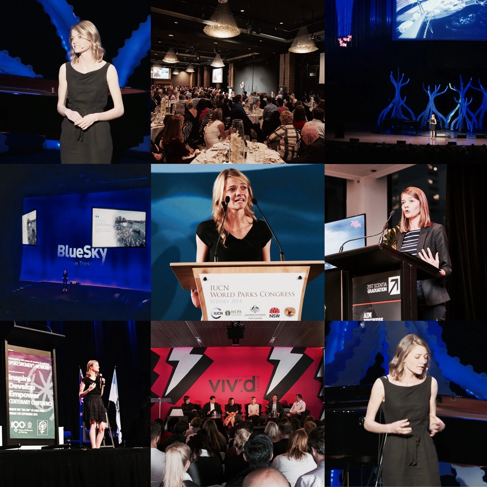

In a keynote presentation delivered in a genuine and compelling style, Jessica shares the lessons that enabled her to achieve a feat that only a handful of people throughout history — and none at such a young age — have been able to. Jessica encourages audiences to challenge their expectations of themselves, stresses that anyone is capable of achieving extraordinary feats and shares insights that enable anyone to take on the world and their personal goals.
Testimonials
Thank you for your time and sharing your experiences with the IBM leadership team last week. Your story is truly inspiring and really resonated with the team to help push us out of our comfort zones and take on the challenges ahead of us. I really valued the time you spent with us, and the open discussion with the team was humbling and extremely motivating.
Jessica has been an outstanding key-note speaker for Domain. Warm, authentic and well prepared. Jessica has spoken several times for us to a variety of audiences and each time the room has been captivated with her compelling story. I highly recommend her for any speaking event.
Jessica Watson and Macquarie Life share the same passion for challenging the status quo and we’ve been delighted to be supporting her for the last two years. Jessica’s achievement of becoming the youngest person ever to sail solo, non-stop and unassisted around the world is an amazing feat and one that really shone a spotlight on what can be achieved with determination, passion and energy. As we have taken Jessica around Australia to share her story with our clients, what really connected with the audience was her self belief and positivity. In all her presentations, it was also her humility that really endeared her to the audience and she also demonstrates a maturity beyond her years in her ability to respond to questions and interact with people of all ages. Jessica is one of Australia’s most inspiring and impressive youth leaders and is proof for us all that with the passion to succeed, people, like businesses, can achieve great things.
Jessica’s field trip to Laos with the World Food Programme (WFP) highlighted exactly why she was chosen by the UN to be a Youth Ambassador for WFP. Jessica gave presentations to under nourished children in schools in villages in the remote south of Laos and also in Vientiane, at Government level. Her ability to adapt and communicate to such a vastly different audience, is a credit to her. Despite the language barriers, Jessica managed to overcome the communication barriers and made a huge impression with the people of Laos.
At just 21, she has a maturity way beyond her years, whilst also having the ability to adapt to any audience, whether it be schools, corporate or simply engaging people on a personal basis. It’s an absolute privilege to have Jessica as our MTA ambassador and would be more than happy in endorsing her for any corporate engagement.
The theme of our conference was Inspire to Lead. Jessica certainly fulfills that theme in what she has achieved in her life to date. Her story of determination and following her goals and dreams was truly motivating for us all. The confidence she displayed combined with her charming personality was fully visible in her most entertaining presentation. Jessica explained that whilst she was the figurehead of the effort, she would not have been able to achieve success without planning and backing by a professional support team. Everyone present was left feeling that if you believe in yourself and your support team nothing is impossible.
